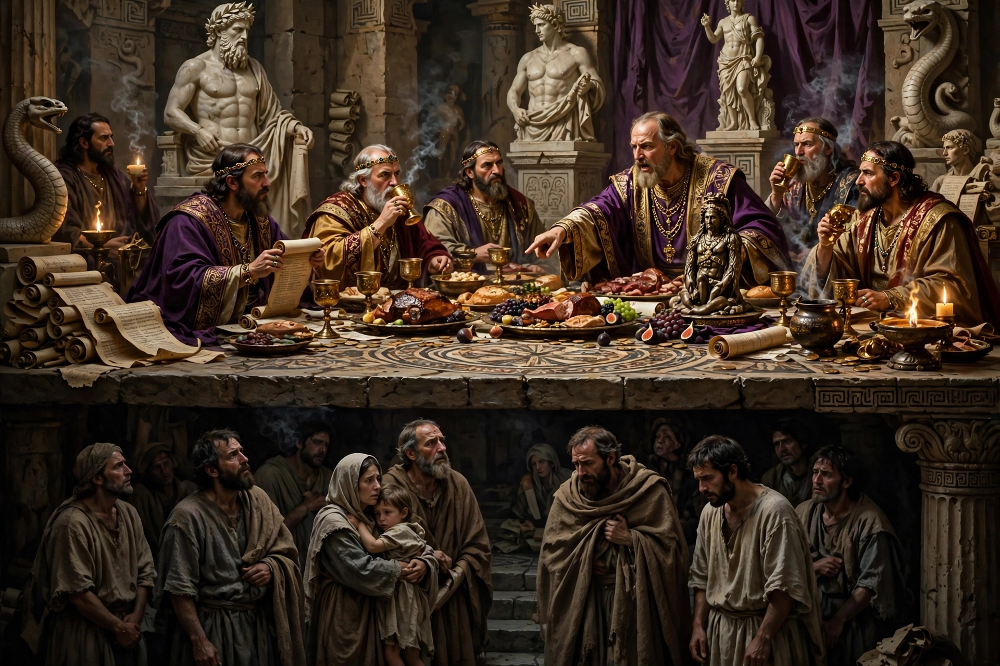

A história da Igreja primitiva carrega cicatrizes profundas deixadas por heresias que tentaram sufocar a pureza do Evangelho desde o seu alvorecer. Entre as admoestações mais severas registradas no Apocalipse, o próprio Cristo faz questão de declarar o Seu santo repúdio às práticas de um grupo específico: os nicolaítas (Apocalipse 2:6, 15). Etimologicamente, o termo deriva da junção de nikao (vencer, dominar) e laos (o povo), revelando a essência catastrófica dessa facção: a dominação, subjugação e hierarquização tirânica sobre o povo de Deus. O nicolaítas representam a invenção inaugural do clericalismo corporativo, a divisão fatídica entre uma casta sacerdotal intocável, revestida de privilégios divinos exclusivos, e a laicidade relegada à condição de massa submissa e explorada.
O conceito do sacerdócio universal de todos os crentes — onde cada filho de Deus possui acesso direto ao trono da graça por intermédio do único Mediador, Cristo Jesus — foi sistematicamente aniquilado por essa estrutura. Em seu lugar, ergueu-se uma pirâmide de poder humano onde líderes autoproclamados exigem obediência cega, ditam normas de controle psicológico e transformam o rebanho em súditos de um reino terreno. A opressão nicolaíta não é um vestígio do passado antigo; ela vive e reina com vigor nas estruturas eclesiásticas modernas que operam sob a batuta de convenções corporativas e autocratas do púlpito.
Uma exegese rigorosa das cartas às igrejas da Ásia Menor demonstra que o erro dos nicolaítas não residia apenas em desvios doutrinários abstratos, mas em uma postura de intensa corrupção prática e institucional. Eles introduziram a separação elitista entre o clero e os leigos, criando uma casta sacerdotal que se colocava entre o crente e Deus, cobrando pedágios espirituais e exigindo vassalagem. Deus odeia essa prática porque ela corrompe a dinâmica da comunhão cristã, substituindo o amor fraternal e o serviço sacrificial por um regime de dominação e exploração de almas.
Os reformadores históricos perceberam com clareza esse perigo e denunciaram o ressurgimento do espírito nicolaíta nas estruturas eclesiásticas de seu tempo. O reformador Martin Lutero, em seus escritos contundentes sobre a liberdade cristã e o cativeiro babilônico da igreja, fustigou implacavelmente a tirania de uma casta clerical que usurpava o lugar de Cristo, transformando ministros do Evangelho em senhores absolutos e dominadores do rebanho, em direta afronta às ordenanças do Novo Testamento que exigem pastores servos, e não tiranos.
Para ilustrar a tragédia dessa dinâmica, recorro à fábula clássica sobre o Pastor e os Cães de Guarda, onde os cães, outrora defensores do rebanho contra os lobos, passam a ser alimentados pelos lobos para manter as ovelhas confinadas em currais estreitos, sob o pretexto de "proteção". No modelo nicolaíta contemporâneo, a liderança autocrática utiliza o medo, a manipulação de textos bíblicos tirados de contexto — como o famoso "não toques nos meus ungidos" — para amordaçar qualquer voz de questionamento, auditoria ou busca por transparência.
O crente é reduzido a um mero pagador de dízimos e executor de tarefas mecânicas, destituído de sua dignidade espiritual e de seu discernimento crítico. O altar transforma-se em um trono de autocracia, onde o líder supremo dita regras de vestimenta, comportamento, lealdade institucional e até de destino financeiro, sufocando a liberdade que Cristo conquistou na cruz com o preço de seu próprio sangue.
A advertência de Apocalipse permanece atual e cortante: odiar as obras dos nicolaítas é um dever inegociável de todo cristão que deseja manter-se fiel ao Evangelho genuíno. É preciso desmantelar a soberba clerical, rejeitar o jugo de líderes tiranos e resgatar a beleza da comunhão horizontal, onde Cristo é a única cabeça e todos os irmãos servem uns aos outros em amor e humildade.
A sua liderança atua como serva de Cristo ou exerce domínio nicolaíta sobre a sua fé e consciência?